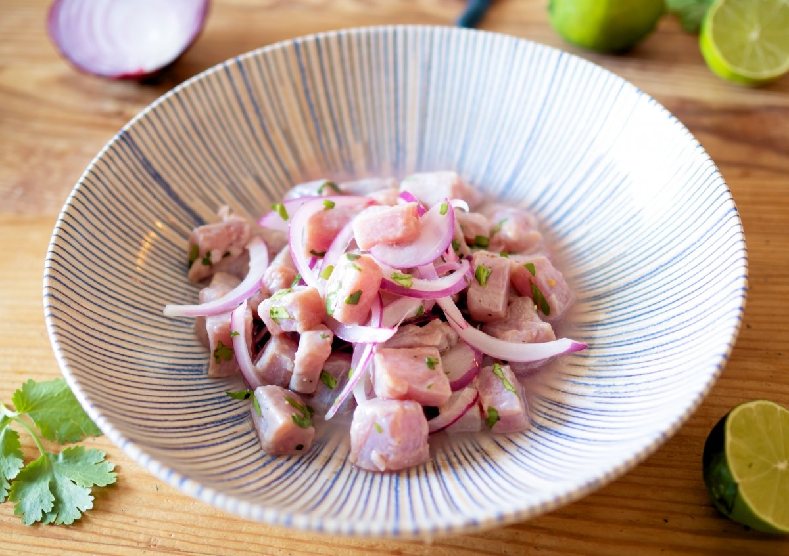
Cuando digo Javotecocina la gente piensa en fuego: en asado, en humo, en brasa. Y sí, ese es el corazón de lo que hago. Pero hay otro norte que me interesa igual, y este libro es ese otro lado.
El calor salteño aprieta de octubre a marzo, y hay días en que prender el fuego es una locura. Ahí aparece el otro recetario: el de la trucha que se cura en limón, el del tomate que se vuelve sopa fría, el de las hierbas de altura que perfuman sin necesitar una sola llama. Cocinar sin fuego no es cocinar menos: es cambiar la herramienta.
El ácido del limón cocina el pescado tan en serio como una brasa, solo que sin calor. El aceite y la sal hacen lo que en otro plato haría el carbón, y el frío de la heladera asienta sabores que el fuego apuraría. Todo eso es técnica, aunque no salga humo.
Para mí la trucha de los ríos salteños es la que manda acá: aparece en ceviche, en tartar y en tiradito, siempre fresquísima. Pero alrededor está toda la huerta del norte: la quinoa de la Puna, la remolacha de campo, el choclo salteño, la naranja de los valles y el locoto, que pica con gracia.
Estas recetas son para cuando hace calor, para cuando querés sorprender sin encender nada, para demostrar que la cocina del norte argentino también sabe de liviandad. Hacelas tuyas: ajustá el ácido, animate al locoto, cambiá las hierbas por las que tengas. Como siempre, el mejor final es que dejen de ser mías.
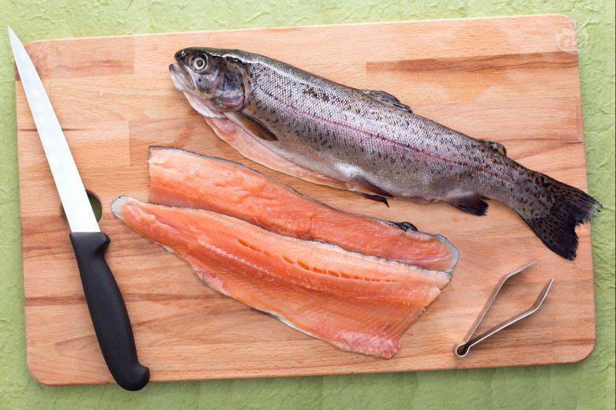
Limón fresco, nunca embotellado: el jugo cuaja el pescado de afuera hacia adentro, sin una llama. Por eso el corte manda. Cubos grandes te quedan crudos en el centro; láminas finas se cocinan enteras en segundos. Pensalo así: el ácido es el fuego y el tamaño del corte es la temperatura.
Un ceviche de trucha son ocho minutos, ni uno más. A los ocho el exterior está opaco y adentro sigue rosado y jugoso: ahí parás. Pasados los diez ya es otra cosa, gomosa. Poné temporizador, en serio: acá el reloj manda como el termómetro en el asado.
Es el jugo del ceviche hecho a propósito: limón, un poco de caldo o agua, locoto, apio y jengibre, todo al mixer y colado hasta que quede líquido, ácido y picante. Bien fría, va sobre el tiradito justo antes de llevarlo a la mesa. Es salsa y cocción a la vez; acá la gente se la toma hasta sola, en vaso.
La trucha de nuestros ríos tiene una carne firme y rosada que aguanta el crudo como pocas. Pero el crudo no perdona: compralá el mismo día, que no pase más de dos jornadas en la heladera y tenela siempre fría. Si no está impecable, no hay ceviche. Es la regla número uno y no la negocio.
El crudo entra primero por los ojos. Un cuchillo afilado da láminas limpias y parejas; uno romo desgarra la fibra y te arruina la textura. Para el tartar, cubitos de 5 mm a cuchillo, nunca a máquina. Para el carpaccio y el tiradito, láminas casi transparentes, en diagonal, con la pieza bien fría: el frío firma el corte.
Para mí la cadena de frío es sagrada de punta a punta. Pescado y vegetales salen de la heladera justo para trabajarlos y vuelven enseguida. Bowls fríos, platos fríos, leche de tigre con hielo. Un tartar tibio no es un tartar: es pescado yendo a mal puerto. Si dudás, enfriá.
Acá en el norte aromatizamos distinto. La quirquiña le gana al perejil en casi todo y es más compleja; la muña perfuma las aguas; el cedrón y la manzanilla refrescan. Casi todas van crudas y al final, porque el ácido las ennegrece y el calor las amarga: entran con el plato ya servido.
La cocina fría se para en tres patas: el ácido del cítrico, el graso del aceite o el queso y el picante del locoto. Demasiado ácido raspa, demasiada grasa empacha, demasiado picante tapa todo. Yo pruebo y ajusto siempre al final: un chorro de aceite, medio limón más, una pizca de locoto. Está cuando ninguno le gana al otro.
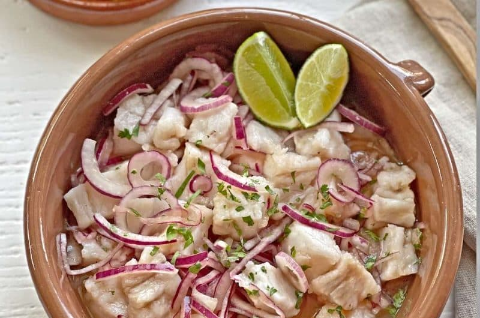
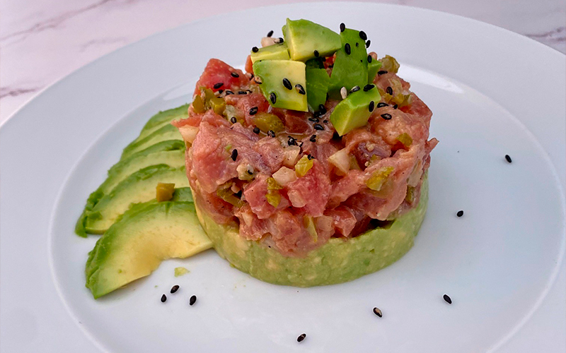
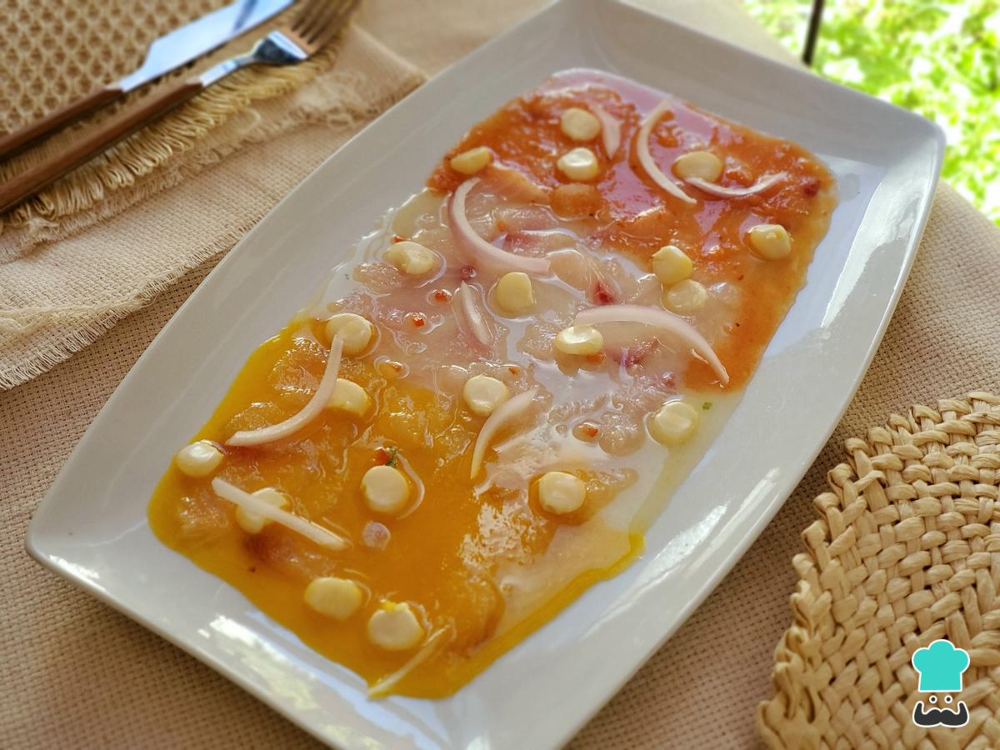
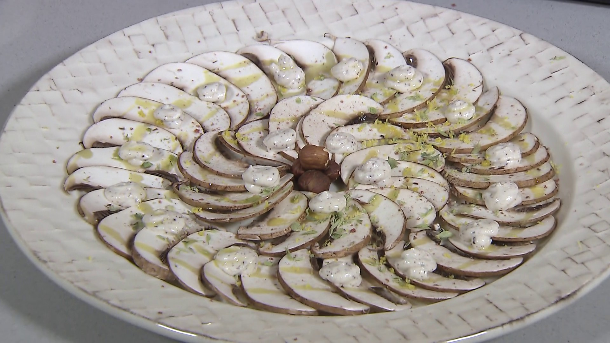
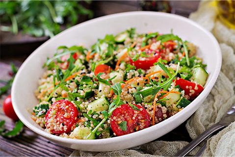
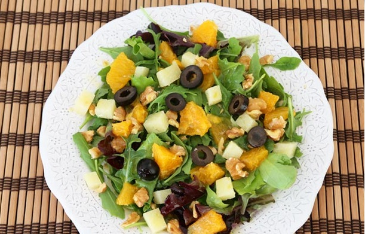
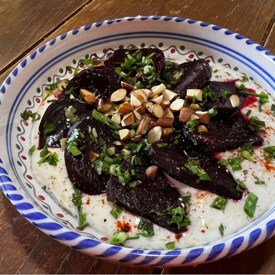
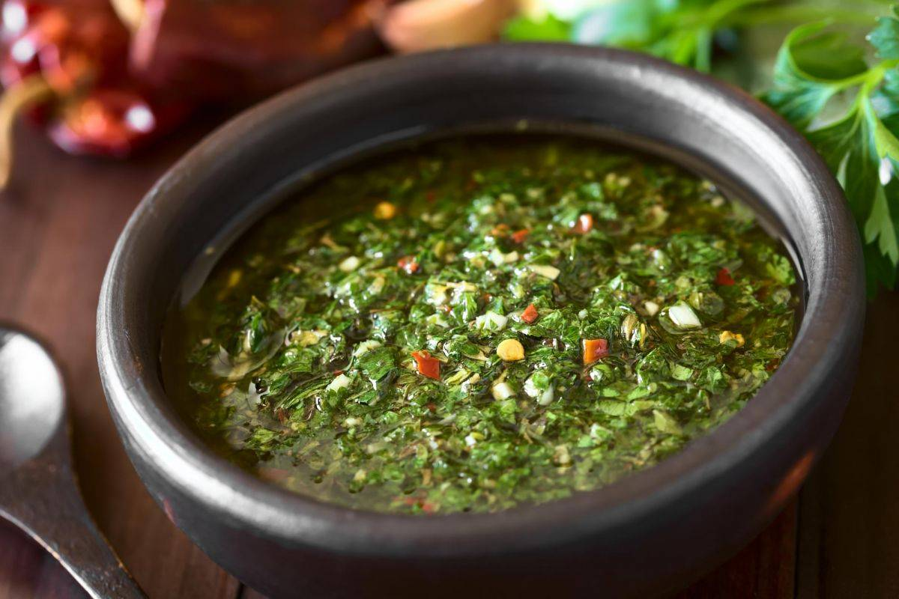
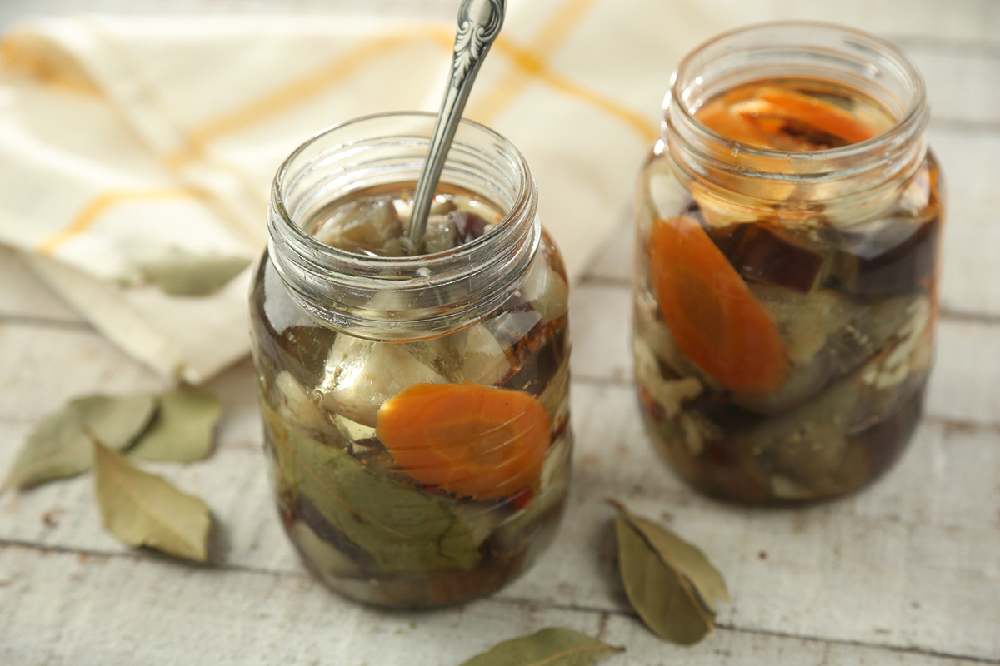
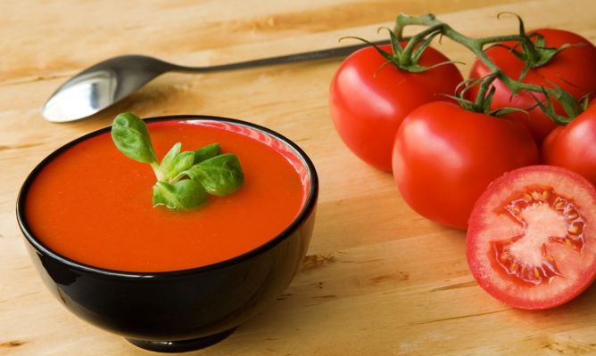
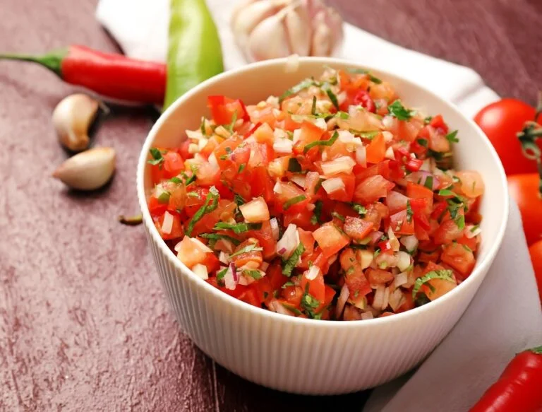
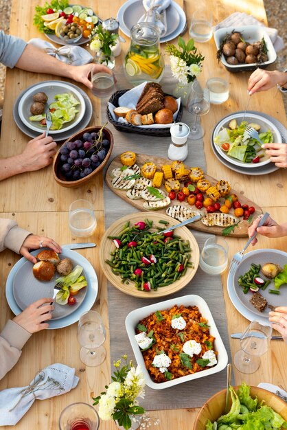
La de locoto y naranja de este libro es mi comodín, pero conviene tener dos o tres a mano: una de limón y oliva bien básica, otra con mostaza y miel, y la del líquido del escabeche con aceite. En frascos en la heladera, listas para sacar veinte minutos antes y agitar.
El agua de hierbas andinas abre la lista, pero la idea se estira: pepino y menta, naranja y romero, sandía con un toque de limón. Siempre infusión en frío, sin azúcar o con muy poca miel. Una jarra fría en la mesa cambia el clima de toda una tarde de calor.
Para esperar el plato principal: queso de cabra salteño, el escabeche de este libro, aceitunas, nueces tostadas, gajos de naranja y buen pan. Frío, ácido y graso conviviendo en una tabla. Se arma en cinco minutos y aguanta toda la sobremesa sin marchitarse.
La llajua es la salsa picante boliviano-salteña por excelencia: tomate, locoto y quirquiña molidos en batán, sin cocción. Fresca y brava, le va a casi todo lo de este libro. Tené siempre un frasco: un toque de llajua despierta una ensalada tibia o un pescado crudo como nada.
El ácido también es fuego y el limón también cocina. El norte que no quema sabe de frescura, de paciencia y de la huerta. Apagá el fuego, exprimí el limón y dejá que el frío haga lo suyo.